В 2020-м я просто смотрел на неё со стороны. В 2025-м заработал на неё, создавая мультфильмы с помощью нейросетей для клиентов из США. Это история машины, которая вернулась вместе с новой профессией.
Я занимаюсь нейросетями и создаю ИИ-мультфильмы. Именно эта работа помогла мне накопить на машину, которую я когда-то считал недостижимой, а невероятное совпадение вернуло в мою жизнь именно тот Scion FR-S.
AICONTENT CREATOR
00 / PROLOGUE
Некоторые автомобили мы выбираем сами.
Другие проходят через города, годы и невероятные совпадения, чтобы однажды оказаться именно у нас.
LOS ANGELESMINSKSAINT PETERSBURGMINSK
01 THE STORY
Путь одной Scion FR-S
От американского аукциона до новой профессии, ИИ-мультфильмов и исполненной мечты — без выдуманных глав.
CHAPTER 012019
LOS ANGELES → MINSK
До нашей встречи её история уже началась.
В 2019 году красная Scion FR-S приехала в Беларусь из Лос-Анджелеса. Автомобиль привезла компания Autogroup — как проект для себя.
На аукционных кадрах она была другой: ещё без будущего widebody-силуэта, на белых дисках и с огромным антикрылом. Почти сразу после приезда началась новая глава — примерка и установка расширений Rocket Bunny. Обычная FR-S постепенно обретала характер машины, которую невозможно не заметить.
01
Аукцион Переезд Начало сборки
CHAPTER 022020
THE FIRST SIGHT
Я просто остановился и долго смотрел.
Впервые я увидел эту машину в Минске в 2020 году. Она уже стояла на расширениях Rocket Bunny, была очень низкой и выделялась огромным спойлером. Я не знал владельца и ничего не знал о её прошлом.
Она запала мне в душу, но казалась недостижимой. Я понимал: накопить на такую машину получится нескоро — если вообще получится. Потом Scion исчезла из поля зрения. Со временем я остыл. Казалось, история закончилась, так и не начавшись.
«Тогда это была чужая машина. Но уже моя мечта.»
CHAPTER 032025
THE IMPOSSIBLE COINCIDENCE
Пять лет спустя прошлое вернулось одной фотографией.
В 2025 году я решил изменить деятельность, вошёл в сферу искусственного интеллекта и присоединился к агентству Neurocore. Я начал создавать изображения, видео и мультфильмы с помощью нейросетей. Директор заметил мою любовь к японским автомобилям и рассказал, что когда-то у него была Scion FR-S. Затем показал фотографию.
На ней была та самая машина.
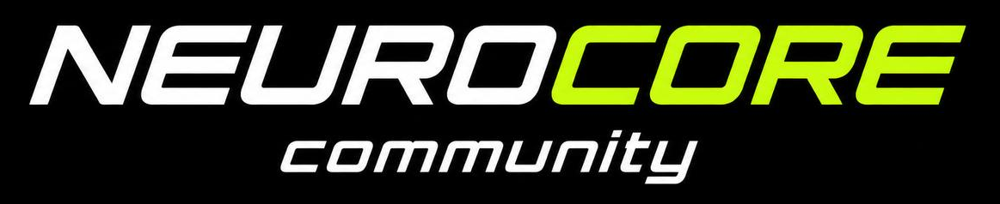
Новая профессия стала связующим звеном между старой мечтой, заработком на ИИ-мультфильмах и её продолжением.
К тому моменту автомобиль находился в Санкт-Петербурге у знакомого директора. Я снова захотел именно его — уже не похожую машину, а эту конкретную Scion FR-S.
5ЛЕТ СПУСТЯ
CHAPTER 04RETURN
SAINT PETERSBURG → MINSK
Мечта, на которую я заработал с помощью нейросетей.
Я создавал ИИ-мультфильмы для клиентов из США. Заказы превратили новый навык в реальную работу, а заработок — в возможность накопить значительную часть суммы на Scion. Затем я продал свою прежнюю машину и решился на покупку.
Директор Neurocore договорился со знакомым о выкупе. Я благодарен ему за помощь: без этого история могла снова оборваться. Так автомобиль, который я случайно увидел в 2020-м, вернулся в Минск уже как часть моей собственной жизни.
DREAMACQUIREDMINSK / BY
02 VISUAL ARCHIVE
Тогда / сборка / сейчас
Личный фотоархив выстроен в той же последовательности, что и история.
2019
Оригинал из личного архива
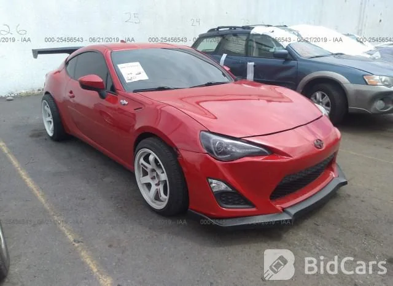
Аукцион · кадр 012019
2019
Оригинал из личного архива
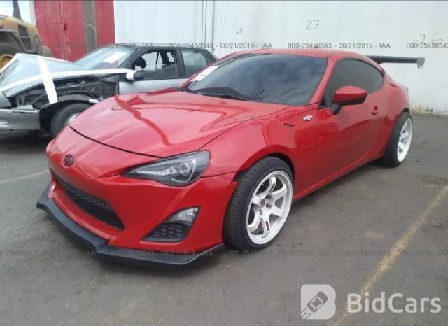
Аукцион · кадр 022019
2019
Оригинал из личного архива
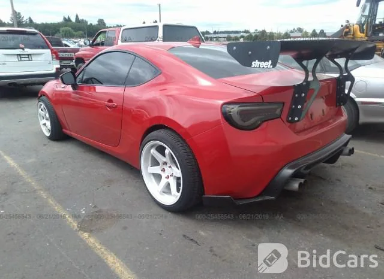
Аукцион · кадр 032019
2019
Оригинал из личного архива
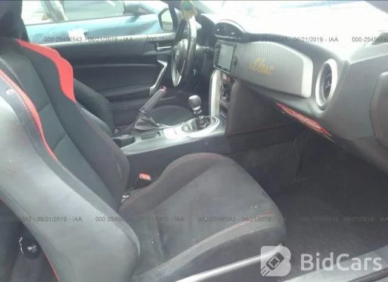
Аукцион · салон2019
2019
Оригинал из личного архива
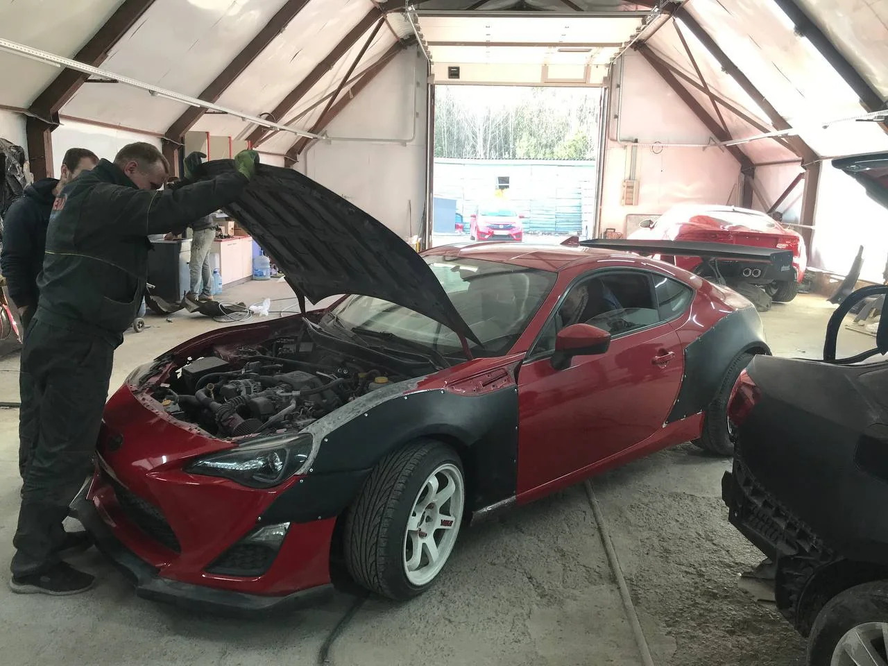
Сборка · Rocket Bunny2019
2019
Оригинал из личного архива
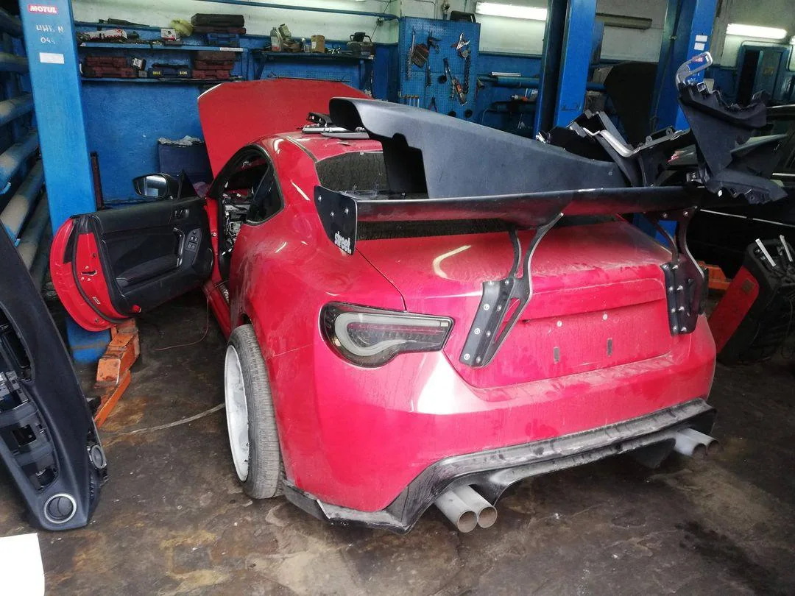
Сборка · примерка2019
NOW
Оригинал из личного архива
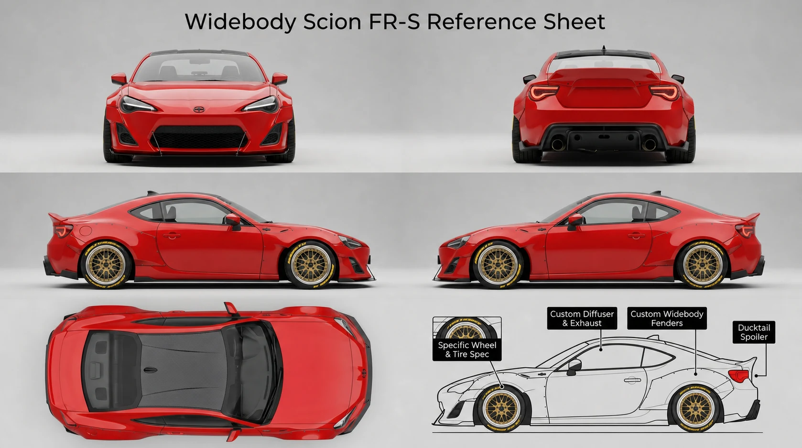
APPROVED REFERENCE · NO PLATESNOW
NOW
Оригинал из личного архива
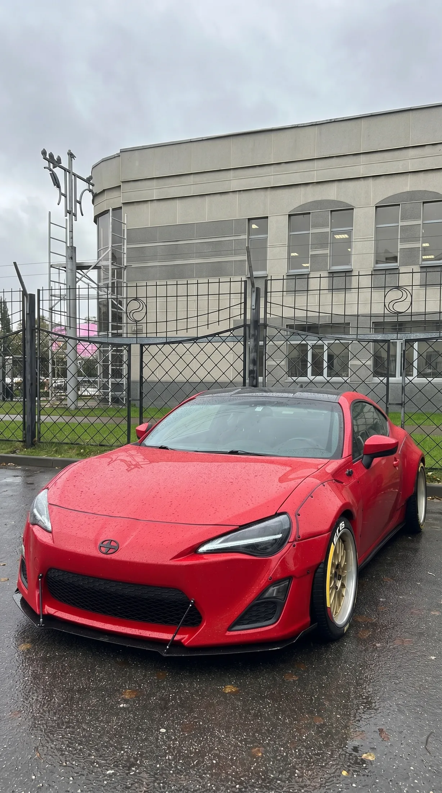
Сейчас · передний ракурсNOW
NOW
Оригинал из личного архива
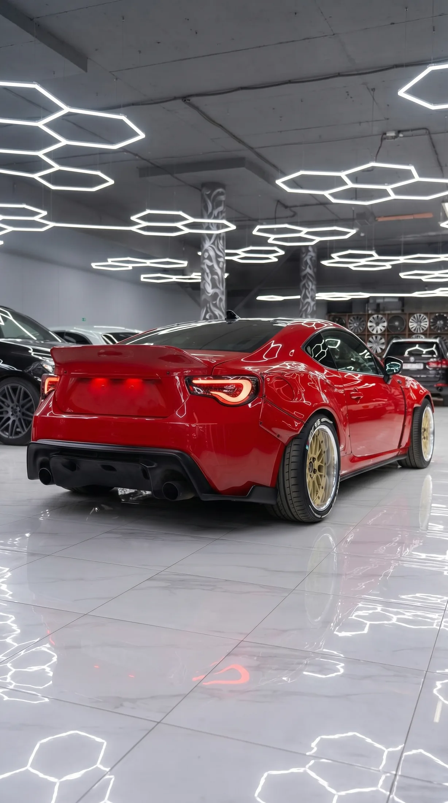
Сейчас · задний ракурсNOW
2026
Оригинал из личного архива
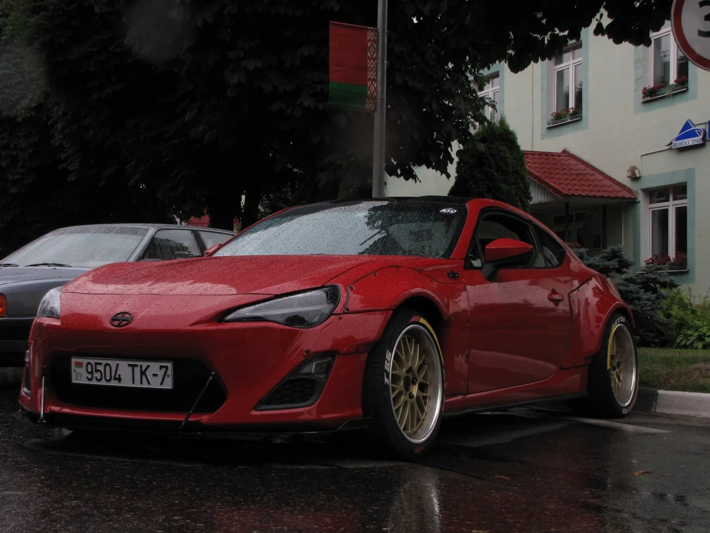
AutoFest · оригинальный кадр2026
В галерее использованы реальные аукционные, сборочные и актуальные кадры. Художественные постеры и референсные визуалы отмечены отдельно.
02B VISUAL INTERLUDES
Машина как главный герой.
Авторские постеры из проекта работают как атмосфера между документальными главами. Это художественные образы, а не архивные фотографии событий.
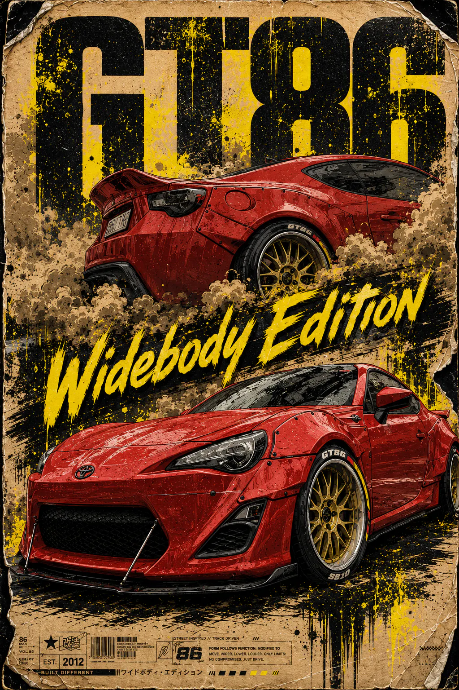
POSTER STUDY 01WIDEBODY EDITION
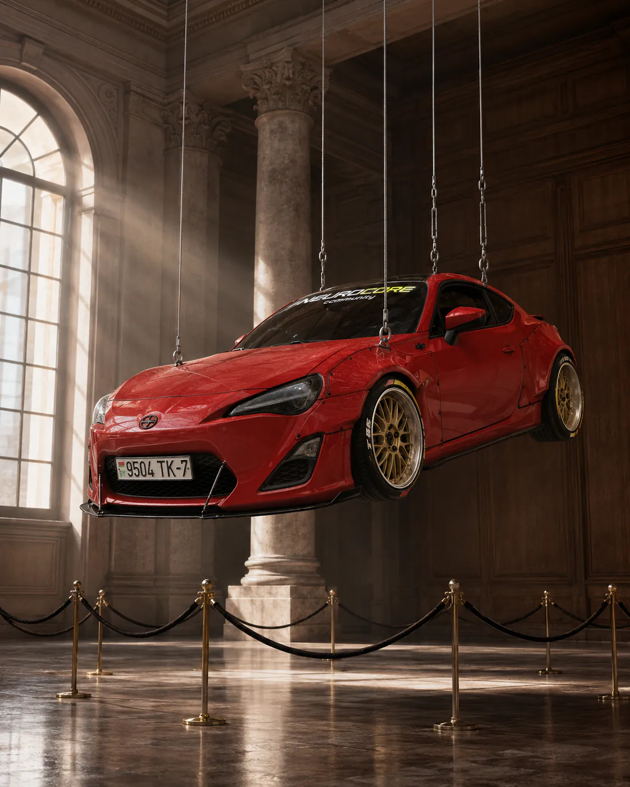
POSTER STUDY 02THE OBJECT
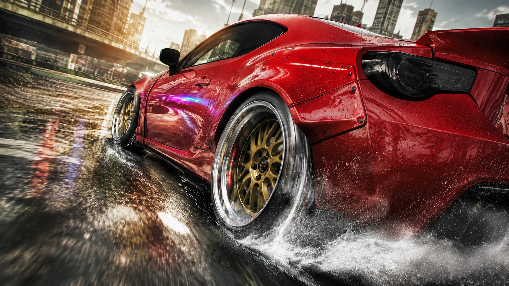
POSTER STUDY 03WET RUN
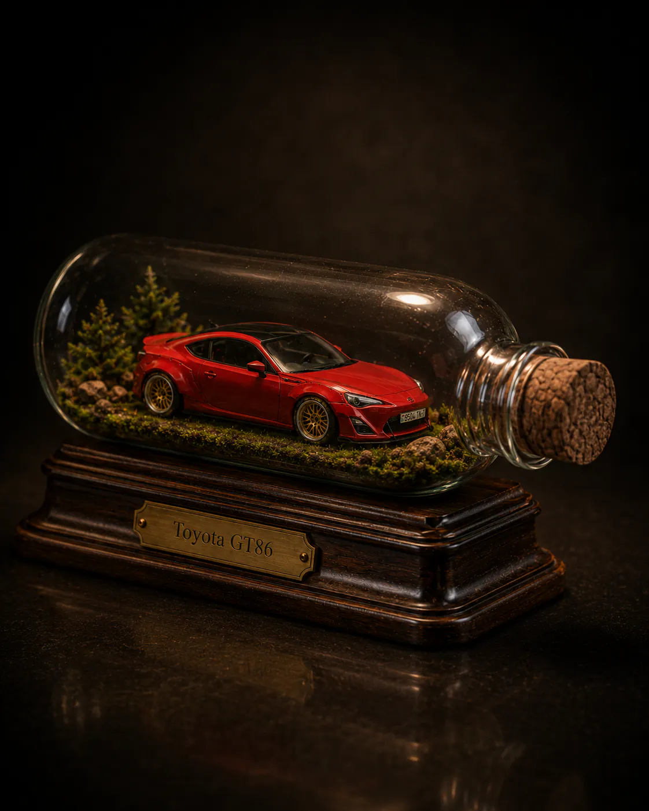
POSTER STUDY 04MEMORY CAPSULE
03 AI TURNING POINT
Мечта, оплаченная нейросетями.
Новая сфера стала не фоном истории, а способом приблизить цель: я создавал ИИ-мультфильмы для клиентов из США и направлял заработанное на покупку Scion.
01Идея→
02AI-кадр→
03Мультфильм→
04Оплаченная работа→
05Scion FR-S
NOT A SHORTCUT · A NEW PROFESSION
Я научился превращать идею в кадр, кадр — в мультфильм, а навык — в оплачиваемую работу.
Нейросети не купили машину одним нажатием кнопки. За результатом стояли обучение, практика, работа с заказчиками и десятки собранных сцен. Но именно эта новая профессия дала мне возможность заработать на давнюю мечту.
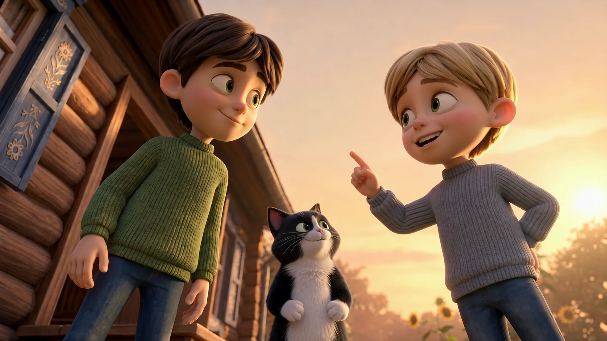
AI CARTOON FRAME 01CHARACTERS / STORY
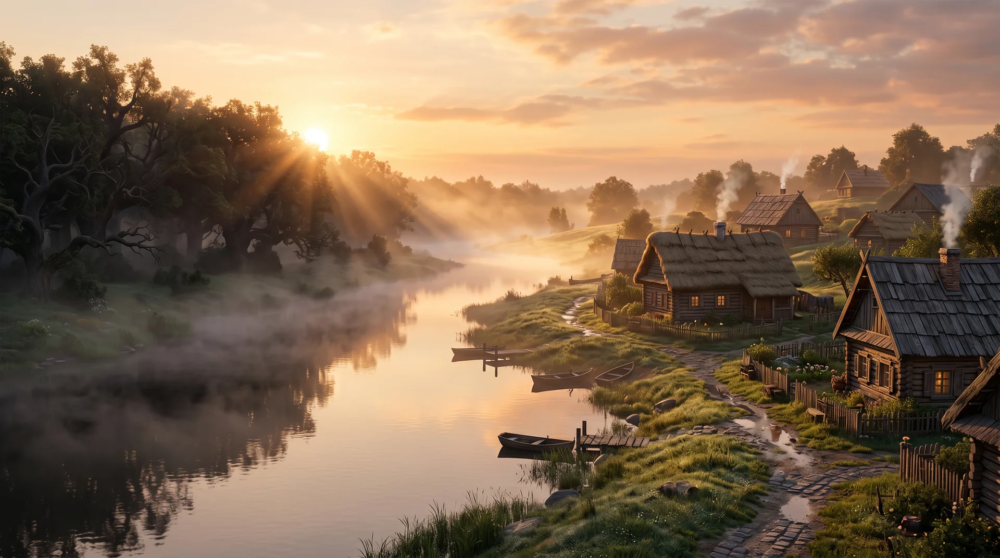
AI CARTOON FRAME 02WORLD / ATMOSPHERE
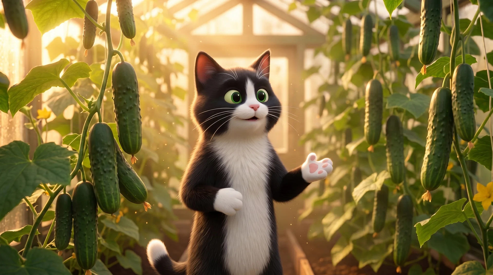
AI CARTOON FRAME 03HERO / EMOTION
THE NEXT FRAME
Примеры визуального направления моих ИИ-мультфильмов. Больше процесса, новых работ и продолжение истории машины — в Instagram.